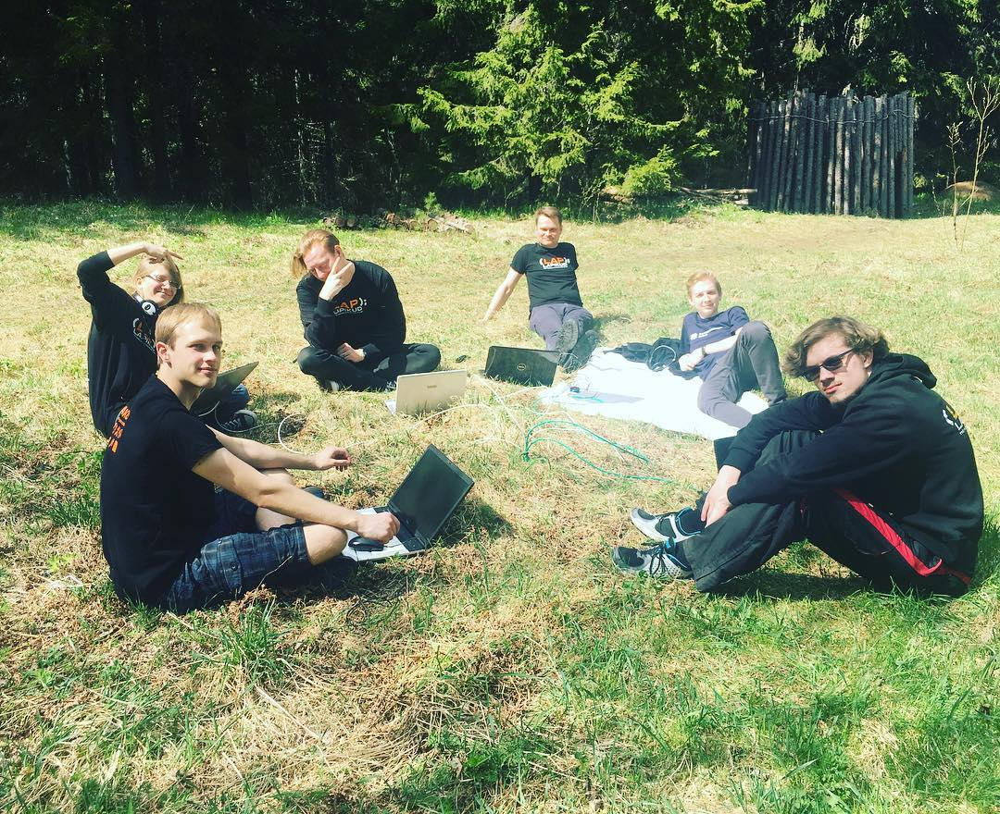
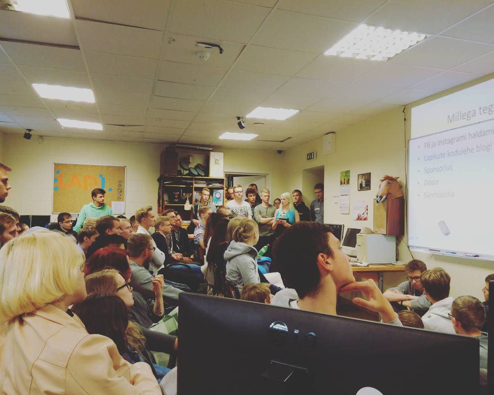

Lapikute põhieesmärk on ühendada IT-st ja arvutitest huvitatud tudengeid, pakkudes neile praktilist tegevust ja uusi väljakutseid. Meie juures on võimalik osaleda tarkvaraprojektides, korraldada koolitusi ning üritusi ja neis ka osaleda ning abistada ülikoolipere nende tehnikaprobleemidega, seda siis meie helpdeskis.
Soovime liikmetes arendada lisaks tehnilistele oskustele ka üldpädevusi, nagu tiimitöö, suhtlemisoskus, juhtimine ja planeerimine. Lapikutes tegutsedes saad ka palju tutvusi ja kogemusi tulevikus karjääri loomiseks.
Teine oluline eesmärk on pakkuda tudengitele toetavat ja lõbusat seltskonda, et ülikooliaastad oleks ikka meeldejäävad. Selleks korraldame palju üritusi ja veedame koos toredalt aega.

Kui tunned, et tahad osa saada meie organisatsioonist ning ennast arendada koos teiste IT-huviliste tudengitega, siis on selleks mitu valikut. Meil on kolm meeskonda: Tarkvara, Helpdesk ja Kultuur.
Tarkvaratiimis saad tegeleda veebilehtede, mobiilirakenduste, mängude või muude huvitavate projektide arendamisega. Lisaks ka õpid muid IT-teemasid, nagu Linuxi kasutus ja serverite püsti panemine, seda läbi meie koolituste. Hea võimalus täiendada nii enda tehnilisi kui ka sotsiaalseid oskuseid, nagu tiimitöö.
Helpdeski meeskonnas on võimalik omal käel parandada ja komplekteerida arvuti riistvara ning teha palju muudki tehnikaga seonduvat, abistades seeläbi kliente või tegeledes enda projektidega. Kasutada on mitmed tööriistad, nagu jootekolbid, 3D-printer, multimeetrid ja palju muud.
Kultuuritiimis saad aidata Lapikute meeleolu ning sotsiaalmeedia üleval hoidmisega, korraldades siseüritusi ja neid ka turundades. Lisaks teevad tiimi liikmed koostööd teiste organisatsioonidega, et korraldada ühiseid üritusi. Hea võimalus panna proovile oma loovus.
Kui on huvi, siis võib ühineda ka mitme tiimiga. Üheski tiimis pole varasemat kogemust vaja, isegi kui see tuleks kasuks. Kuid oluline on soov õppida ning edasi areneda. Kõige edukamad on olnud liikmed, kes võtavad initsiatiivi, astuvad vastu uutele väljakutsetele ning aitavad ka teisi. Sulle endale on abiks vanemad Lapikud, kes enda ajudest tarkust välja pigistavad ehk õpetavad, kuidas midagi teha.
Sind ootab võimalus võtta osa erinevatest projektidest, koolitustest, lõbusatest üritustest ning ühiselt veedetud õhtudest (või öödest), mis mööduvad nokitsedes, koolitöid tehes või niisama chillides. Kokkuvõttes saad sõbrad, kellega ülikooli aastad mööda saata, palju uusi kogemusi ning ka mõned ilusad märked CVsse.

Tarkvaratiimiga liitudes saad praktilise kogemuse tarkvara arendamisest. Selleks on meil erinevad koolitused ja projektid, millega saab liituda. Me arendame veebilehti, nagu näiteks TipiLAN, tegeleme mängude arendusega, mobiilirakendustega ning oleme teinud ka palju muud huvitavat, näiteks mikrokontrollereid programmeerinud.
Ootame liikmetelt alati uusi ideid, mida võiks järgmisena teha, kuid saame ka Lapikutest väljaspoolt projekte, seega tegevust jagub. Korraldame ka iga aasta programmeerimisvõistlust ASI Karikas, kus on võimalik välja mõelda programmeerimisülesandeid ning luua võimalus noortel andekatel IT-huvilistel kooliõpilastel näidata enda oskusi ning võita õppimiskoht TalTechis.
Tarkvaratiimis õpid kasutama Githubi ja Giti. Saad kogeda, kuidas toimub tarkvara arendamine tiimiga, mis täiustab sinu tehinilisi oskuseid, kuid võib-olla veelgi tähtsamalt, sinu suhtlemisoskust. Õpid töötama erinevate programmeerimiskeeltega ja neile vastavate raamistikega. Soovime kasvatada enda liikmetes julgust ja initsiatiivi, et nende eesmärgid, olgu need kui suured tahes, ei tunduks võimatud.
Meie liikmed ka tõdevad, et just Lapikutes saadud oskused ja tutvused on põhjus, miks nad praktikale või tööle said. ↑ Tagasi
Helpdeski meeskonnaga ühinemine annab sulle võimaluse toimetada arvutite ning muu tehnikaga, nagu kõlarid või raadiod. Arvutitel tuleb diagnoosida probleem ning vajadusel see parandada. Lisaks tegeletakse jootmise, tolmupuhastuse, operatsioonisüsteemide installimise ja seadistamisega ning palju palju muuga.
Helpdeski eesmärk on lahendada klientide nii arvutite kui ka muu tehnikaga seonduvaid probleeme. Selleks, et Helpdeskis hakkama saada toimuvad meil ka koolitused, et õpetada kätte tähtsamad oskused. Kliendi mure lahendamisel läheb suur osa tasust ka tegijale, et rahakott nälga ei jääks.
Lisaks klientide abistamisele saavad liikmed ka enda seadmeid putitada või enda projektide kallal nokitseda ning midagi huvitavat kokku meisterdada. Tööriistu ja vahendeid selleks jätkub. Näiteks on meil ka 3D-printer, et juppe printida.
Helpdeskiga seonduvalt toimub ka paar korda aastas Remondikohvik. See on kogukonna üritus, kus Tallinna elanikud ja TalTechi ülikoolipere saavad enda katkise tehnika meile tuua ja koos Lapikute Helpdeski ning ka muude abiliste juhendamisel selle ära parandada. ↑ Tagasi
Kultuuritiim ühendab enda alla ürituste korraldamise ja turundustegevuse. Kultuuritiim vastutab selle eest, et Lapikute meel oleks lahutatud ja nädal sisustatud ning et peale ülikoolis veedetud pikka ja uusi teadmisi täis päeva saaks teistega koos mõnusalt aega veeta.
Näiteks oleme korraldanud lauamänguõhtuid, videomängude LAN-e, filmiõhtuid ja seriaalide ühisvaatamisi, käinud Tallinna tunneleid avastamas, talisuplemas, ronimas, airsofti mängimas ning korraldanud pidusid, nagu pikslipidu, vikermasetsus, Halloween ja palju muud.
Lisaks tegeleb kultuuritiim ka Lapikute turundamisega, olgu selleks siis suurüritused, nagu programmeerimisvõistlus ASI Karikas ja Helpdeski Remondikohvik, või väiksemad üritused, toimunud koolitused või lihtsalt Lapikute igapäevased tegemised.
Saad õppida, kuidas kasutada Facebooki ja Instagrami ürituste turundamiseks ja Lapikute tegevuste kajastamiseks, kuidas luua silmajäävat plakatit/bannerit Canvas ja Figmas ning kuidas sponsoritega tegeleda. Usume, et need oskused võivad kasuks tulla nii tööotsingutel ja enda turundamisel, kui ka oma lähedastega ürituste planeerimisel. ↑ Tagasi